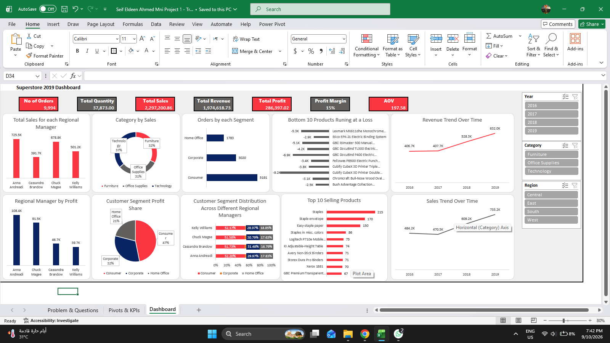
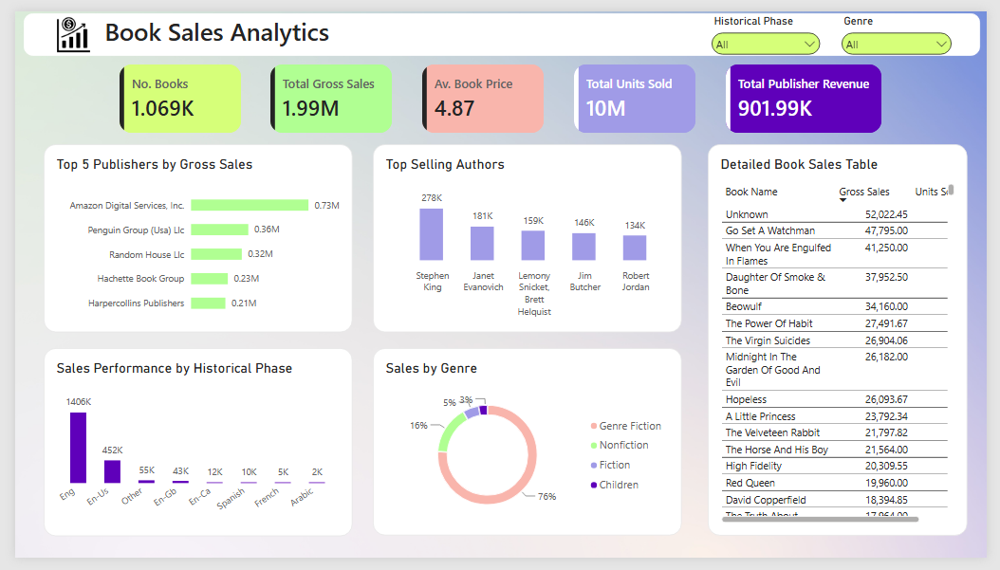
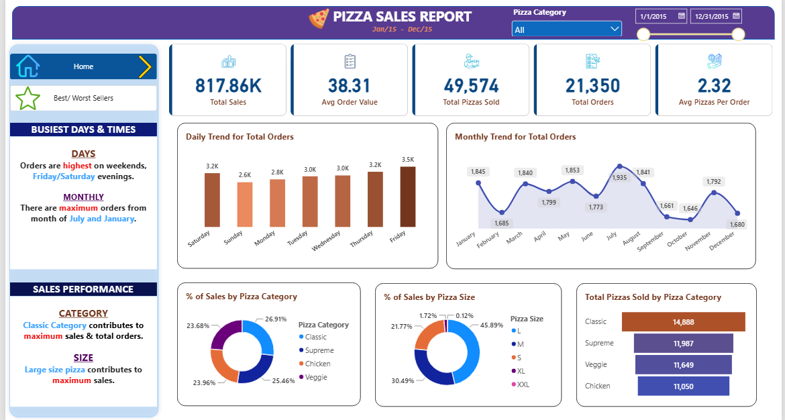
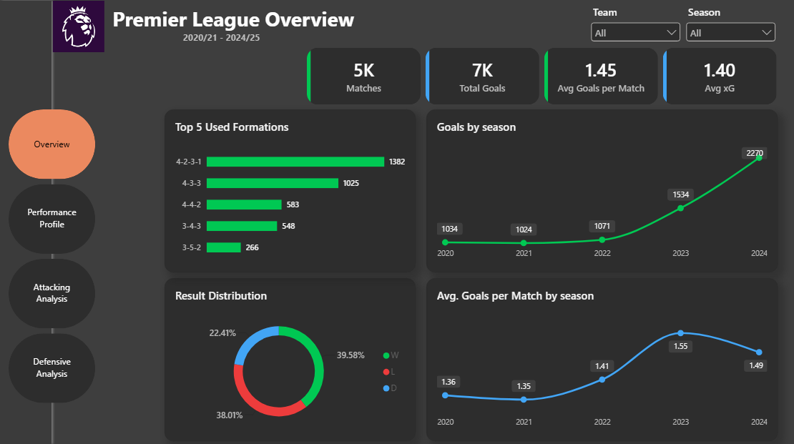
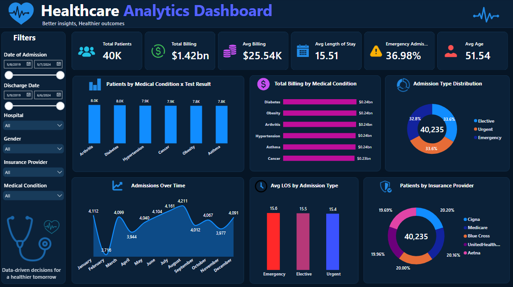

Transforming raw data into actionable insights
Bridging the gap between raw data and confident decision-making
Most small business owners and entrepreneurs are sitting on a goldmine of data, but drowning in messy spreadsheets. I bridge the gap between raw data and confident decision-making. With expertise in Excel, Power Query, and Power BI, I specialize in cleaning chaotic datasets, building robust data models, and designing intuitive dashboards that reveal your most critical business metrics.
Whether you need to track daily sales performance, optimize inventory, or understand customer behavior, I transform complex numbers into clear, actionable insights so you can stop guessing and start growing.
Core tools and analytical competencies
How I can help drive your business forward
Transforming messy, chaotic spreadsheets into structured, analysis-ready datasets.
Building dynamic, intuitive Power BI & Excel dashboards for real-time KPI tracking.
Uncovering revenue drivers, product trends, and regional performance metrics.
Streamlining reporting processes using Power Query and advanced formulas to save hours of manual work.
Communicating complex data clearly through engaging charts, graphs, and visual reports.
Explore my recent dashboard and data analysis portfolio

Analyzing Superstore sales data using Microsoft Excel to identify sales trends, evaluate business performance, and generate meaningful insights covering products, customers, regions, and time-based trends.

Merges publishing metrics with reader review data to evaluate what drives book sales and high ratings across various genres and historical phases.

Evaluates total sales ($817.86K), order volumes, and customer ordering behaviors to identify top-performing menu items, peak business hours, and category preferences.

Analyzes match outcomes, tactical formations, team performances, and advanced metrics like Expected Goals (xG) to uncover patterns in modern English football.

Transforms healthcare data into actionable insights helping hospital administrators track patient length of stay (LOS), billing distributions, and admission ratios.
Let's discuss how we can turn your data into insights